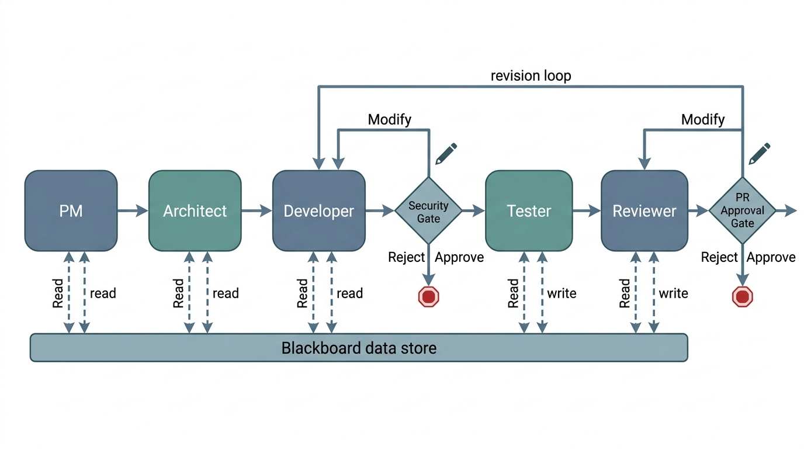

Prerequisites
This section builds on the agent roles and workflow graphs from Section 17.1. You should understand the five canonical roles, the four workflow topologies (sequential, parallel, conditional, cyclic), and the state machine formalism. Familiarity with the reasoning patterns from Chapter 4 helps for understanding debate structures.
Section 17.1 defined who the agents are and what order they execute in. This section tackles the harder coordination questions: How do agents share information? How do they resolve disagreements? When must a human step in? These are the same coordination challenges that real software teams face (shared repositories, design debates, approval workflows), translated into the language of multi-agent systems. The patterns here apply beyond software engineering: the debate protocols reappear in Chapter 54 for scientific hypothesis evaluation, and the human gates become critical in Chapter 55 where autonomous agents control physical laboratory instruments.
Figure 1 illustrates the full coordination architecture covered in this section. The blackboard sits at the center; view functions filter its contents for each agent; and human gates pause the pipeline at security-critical, cost-critical, or quality-critical decision points before the workflow continues.
1. Shared State: The Blackboard Pattern
Picture five AI agents working on a single pull request: the PM writes requirements, the architect designs a solution, and the developer starts coding, only to discover that the requirements changed two steps ago and nobody relayed the update. Without a coordination protocol, multi-agent teams fail the same way human teams do: through lost context, contradictory decisions, and unreviewed commits reaching production.
In a multi-agent workflow, every agent needs access to the evolving state of the software artifact: the requirements, the design, the current code, the test results, the review comments. The simplest coordination pattern is the blackboard: a shared data structure that all agents can read and write. Each agent reads the fields it needs, performs its work, and writes its output back to the blackboard. The workflow executor passes the blackboard to each agent in sequence.
A blackboard is a single mutable object (typically a dataclass or dictionary) that every agent in the pipeline reads from and writes to. Without this shared memory, agents would require explicit point-to-point wiring for every possible pair, scaling quadratically. The workflow executor holds one blackboard instance, passes it to each agent in turn, and the agent mutates the fields it owns before returning control. Use a blackboard when your team is small (fewer than roughly ten agents) and agents need overlapping subsets of the state. Switch to typed message channels (Section 2 below) when context window pressure or strict interface contracts outweigh implementation simplicity. In short: Without shared state, structured disagreement, and human checkpoints at high-stakes decisions, even capable agents produce correct code that breaks real systems.
from dataclasses import dataclass, field
from datetime import datetime
@dataclass
class Blackboard:
"""Shared state for a multi-agent software team.
Every agent reads from and writes to this structure.
The workflow executor passes it between agent invocations.
"""
# input
issue: dict = field(default_factory=dict)
repository_context: dict = field(default_factory=dict)
# PM output
requirements: dict | None = None
# Architect output
design: dict | None = None
api_contracts: list[dict] = field(default_factory=list)
# Developer output
file_changes: dict[str, str] = field(default_factory=dict)
diff: str = ""
# Tester output
test_files: dict[str, str] = field(default_factory=dict)
test_results: dict | None = None
# Reviewer output
review: dict | None = None
approved: bool = False
# Metadata
iteration: int = 0
total_tokens: int = 0
history: list[dict] = field(default_factory=list)
def record_step(self, agent_name: str, tokens: int, summary: str):
"""Log an agent execution for observability."""
self.history.append({
"agent": agent_name,
"iteration": self.iteration,
"tokens": tokens,
"summary": summary,
"timestamp": datetime.utcnow().isoformat(),
})
self.total_tokens += tokens
Blackboard dataclass serving as shared state for the entire multi-agent team, with per-step observability logging via record_step.The blackboard pattern is simple but has a limitation: every agent sees the entire state, which can be overwhelming for the large language model (LLM) context window. A 200-line diff, three pages of requirements, an architect's design document, and 50 test results can easily exceed 100,000 tokens. We need a way to give each agent only the state it needs.
2. Typed Message Channels
An alternative to the monolithic blackboard is typed message passing: each
edge in the workflow graph carries a specific message type, and each agent receives
only the messages sent to it. This is the multi-agent analogue of function parameters:
the developer receives a DesignDocument, not the entire blackboard.
The message schemas below use Pydantic, where BaseModel is a declarative
class whose fields are automatically validated at construction time (see the
Pydantic documentation for details).
from pydantic import BaseModel, Field
class DesignMessage(BaseModel):
"""Message from Architect to Developer."""
design_summary: str
file_changes: list[dict] = Field(
description="List of {path, change_type, description} dicts"
)
api_contracts: list[dict]
constraints: list[str] = Field(
description="Non-functional requirements: perf, security, etc."
)
class CodeMessage(BaseModel):
"""Message from Developer to Tester and Reviewer."""
diff: str
files_changed: list[str]
implementation_notes: str
known_limitations: list[str] = []
class TestResultMessage(BaseModel):
"""Message from Tester to Reviewer."""
tests_written: int
tests_passed: int
tests_failed: int
coverage_percent: float
failure_details: list[dict] = []
class ReviewMessage(BaseModel):
"""Message from Reviewer back to Developer (on rejection)."""
approved: bool
blockers: list[dict] # must-fix issues
warnings: list[dict] # should-fix issues
suggestions: list[dict] # nice-to-have improvements
summary: str
class TypedChannel:
"""A typed communication channel between two agents."""
def __init__(self, name: str, message_type: type[BaseModel]):
self.name = name
self.message_type = message_type
self._messages: list[BaseModel] = []
def send(self, message: BaseModel):
"""Validate and enqueue a message."""
if not isinstance(message, self.message_type):
raise TypeError(
f"Channel '{self.name}' expects {self.message_type.__name__}, "
f"got {type(message).__name__}"
)
self._messages.append(message)
def receive(self) -> BaseModel | None:
"""Dequeue the next message, or None if empty."""
return self._messages.pop(0) if self._messages else None
DesignMessage, CodeMessage, TestResultMessage, ReviewMessage) and a TypedChannel that enforces schema contracts at every agent boundary.
The blackboard and message-passing patterns represent a classic trade-off in
distributed systems. The blackboard is simpler to implement and gives every agent
full visibility, but it couples agents to a shared schema and can overwhelm context
windows. Message passing is more modular (each agent depends only on its input
channel type), scales better to large teams, and naturally limits context size. In
practice, most multi-agent frameworks use a hybrid: a shared state object (like
LangGraph's TypedDict) with per-agent view functions that select
which fields each agent sees. This gives you the simplicity of a blackboard with
the context control of message passing.
3. View Functions: Context-Aware State Projection
A view function projects the full blackboard state into the subset that a specific agent needs. This is the multi-agent analogue of the context engineering techniques from Chapter 11: just as you select which files to include in an LLM's context window, you select which state fields to include in an agent's input.
from typing import Callable
# Each view function takes the full state and returns
# a filtered dict for the agent's system prompt context
ViewFunction = Callable[[Blackboard], dict]
def pm_view(state: Blackboard) -> dict:
"""PM sees only the raw issue and repository structure."""
return {
"issue": state.issue,
"repo_structure": state.repository_context.get("structure", {}),
}
def architect_view(state: Blackboard) -> dict:
"""Architect sees PM output plus repository context."""
return {
"requirements": state.requirements,
"repo_structure": state.repository_context.get("structure", {}),
"existing_patterns": state.repository_context.get("patterns", []),
}
def developer_view(state: Blackboard) -> dict:
"""Developer sees design, requirements, and review feedback if cycling."""
view = {
"design": state.design,
"requirements": state.requirements,
"api_contracts": state.api_contracts,
}
if state.review and not state.approved:
# on review rejection, include the feedback
view["review_feedback"] = state.review
view["previous_diff"] = state.diff
return view
def reviewer_view(state: Blackboard) -> dict:
"""Reviewer sees the diff, design, requirements, and test results."""
return {
"diff": state.diff,
"design": state.design,
"requirements": state.requirements,
"test_results": state.test_results,
"iteration": state.iteration,
}
pm_view, architect_view, developer_view, reviewer_view) that project the full blackboard into agent-specific context slices.4. Debate Patterns
Not every agent interaction is a handoff. Sometimes agents need to debate: argue for different approaches, critique each other's proposals, and converge on a decision. Du et al. (2023) showed that multi-agent debate improves factual accuracy on reasoning tasks. In software engineering, debate is useful for design decisions where multiple valid approaches exist.
4.1 Structured Debate Protocol
A structured debate has three phases: proposal (each agent states its position), critique (each agent responds to the others), and resolution (a judge agent or voting mechanism selects the winner). Debate must use typed proposals and explicit critique dimensions rather than free-form chat. LLMs are trained to be agreeable, so free-form debate tends to devolve into consensus; without explicit adversarial framing, agents converge on the first proposal.
Mental Model
Think of a structured debate like a competitive cooking show (such as Chopped). In round one (proposal), each chef prepares a dish independently using the same basket of ingredients. In round two (critique), the chefs taste each other's dishes and point out what works, what does not, and what they would change. In round three (resolution), the judges weigh the critiques and pick a winner, often suggesting the winning chef incorporate a technique from one of the losing dishes. The structure matters: if you just let the chefs talk casually, they would politely agree that everyone's dish is good. The timed rounds, mandatory critique, and independent judge force genuine evaluation, exactly as typed proposals, explicit critique dimensions, and a separate judge agent do for LLM debate.
from enum import Enum
class DebatePhase(Enum):
PROPOSAL = "proposal"
CRITIQUE = "critique"
RESOLUTION = "resolution"
@dataclass
class Proposal:
"""A design proposal from one agent."""
agent_name: str
approach: str
rationale: str
trade_offs: list[str]
estimated_complexity: str
code_sketch: str # pseudocode or skeleton
@dataclass
class Critique:
"""A critique of another agent's proposal."""
critic_name: str
target_proposal: str # agent_name of the proposal being critiqued
strengths: list[str]
weaknesses: list[str]
questions: list[str]
recommendation: str # "accept", "modify", "reject"
@dataclass
class DebateResult:
"""The outcome of a structured debate."""
winning_proposal: str
rationale: str
modifications: list[str] # changes to the winning proposal
dissenting_opinions: list[str]
async def run_debate(
question: str,
debaters: list[AgentRole],
judge: AgentRole,
run_agent: Callable,
context: dict,
) -> DebateResult:
"""Run a structured three-phase debate between agents.
AgentRole and WorkflowGraph are defined in Section 17.1.
asyncio.gather runs all coroutines concurrently and returns
their results as a list once every coroutine completes.
"""
# Phase 1: Proposals (parallel)
proposals = await asyncio.gather(*[
run_agent(agent, {
"phase": DebatePhase.PROPOSAL,
"question": question,
"context": context,
})
for agent in debaters
])
# Phase 2: Critiques (each agent critiques all others, parallel)
critique_tasks = []
for i, agent in enumerate(debaters):
other_proposals = [p for j, p in enumerate(proposals) if j != i]
critique_tasks.append(
run_agent(agent, {
"phase": DebatePhase.CRITIQUE,
"own_proposal": proposals[i],
"other_proposals": other_proposals,
"context": context,
})
)
critiques = await asyncio.gather(*critique_tasks)
# Phase 3: Resolution (judge evaluates all proposals and critiques)
result = await run_agent(judge, {
"phase": DebatePhase.RESOLUTION,
"proposals": proposals,
"critiques": critiques,
"question": question,
"context": context,
})
return result
run_debate: agents propose in parallel, cross-critique, then a judge agent selects and modifies the winning proposal.4.2 When to Use Debate
Debate is valuable when the design space has multiple plausible solutions and the cost of choosing wrong is high. Use debate for:
- Architecture decisions: monolith vs. microservice, SQL vs. NoSQL, synchronous vs. asynchronous.
- Algorithm selection: when the performance characteristics of different approaches depend on workload assumptions (see Chapter 15).
- Security trade-offs: convenience vs. safety, where a single agent might under-weight the security perspective.
Do not use debate for routine implementation tasks where the design is already specified. Having three agents debate the best way to write a for-loop wastes tokens and time.
A research team needs to store 10 million molecular structures with similarity search capability. The PM specifies the requirements: sub-second similarity queries, batch import of 100K molecules per hour, and integration with the Discovery Workbench. Instead of letting the architect choose alone, we run a debate with two specialist agents: a relational advocate (proposes PostgreSQL with the RDKit cartridge for chemical similarity) and a vector advocate (proposes Chroma with molecular fingerprint embeddings). Each writes a proposal with benchmarks and trade-offs. The critique phase reveals that the relational approach handles exact substructure search better, while the vector approach handles fuzzy similarity better. The judge (the architect agent) resolves by recommending a hybrid: PostgreSQL for structured metadata and exact queries, Chroma for similarity search. Neither debater proposed this solution individually; it emerged from the adversarial process.
Debate resolves disagreements between agents, but some decisions are too consequential for any combination of agents to make alone.
5. Human Approval Gates
When an autonomous coding agent deploys a database migration without review, dropping a column that three downstream services depend on, the resulting outage is not a failure of code quality; it is a failure of coordination. The agent's diff was correct in isolation. What was missing was a checkpoint where a human could recognize the cross-service dependency before the change reached production.
The most important coordination mechanism in a multi-agent team is not between agents; it is between agents and humans. Human approval gates are checkpoints where the workflow pauses and presents a decision to a human operator. The human can approve (continue), reject (halt), or modify (edit the state before continuing). Figure 17.2.1 illustrates multi-agent workflow with human approval gates.

5.1 When to Gate
Not every agent output needs human review. Gates should be placed at decision points where the cost of a wrong decision is high relative to the cost of human review time. Three categories warrant gates:
Security-critical decisions. Any action that modifies access controls, handles credentials, or changes security-sensitive code. The reviewer agent may flag a potential SQL injection, but a human must decide whether the risk is real. See Chapter 20 for deeper treatment.
Cost-critical decisions. Actions that incur significant cost: deploying to production, provisioning cloud resources, purchasing API credits. The architect might recommend a solution that costs \$500/month in cloud compute; a human should approve that commitment.
Quality-critical decisions. The final pull request (PR) approval before merge. Even if the reviewer agent approves, a human should review the diff for a new feature that affects user-facing behavior. This is the "four-eyes principle" (the requirement that at least two people review any critical change before it takes effect) applied to AI-generated code.
from enum import Enum
from typing import Any
class GateDecision(Enum):
APPROVE = "approve"
REJECT = "reject"
MODIFY = "modify"
class GateType(Enum):
SECURITY = "security"
COST = "cost"
QUALITY = "quality"
@dataclass
class HumanGate:
"""A checkpoint where the workflow pauses for human review."""
name: str
gate_type: GateType
description: str
required_fields: list[str] # state fields to show the human
def should_trigger(self, state: Blackboard) -> bool:
"""Determine whether this gate activates given current state."""
raise NotImplementedError
def format_for_review(self, state: Blackboard) -> dict:
"""Extract and format the information the human needs to decide."""
return {
field: getattr(state, field, None)
for field in self.required_fields
}
class PRApprovalGate(HumanGate):
"""Gate before merging a pull request."""
def __init__(self):
super().__init__(
name="pr_approval",
gate_type=GateType.QUALITY,
description="Review the final PR before merge",
required_fields=["diff", "test_results", "review", "requirements"],
)
def should_trigger(self, state: Blackboard) -> bool:
# always trigger for final PR approval
return state.approved
class SecurityReviewGate(HumanGate):
"""Gate when security-sensitive files are modified."""
SENSITIVE_PATTERNS = [
"auth", "security", "password", "token", "secret",
"credential", "permission", "acl", "rbac",
]
def __init__(self):
super().__init__(
name="security_review",
gate_type=GateType.SECURITY,
description="Security-sensitive files were modified",
required_fields=["diff", "file_changes", "review"],
)
def should_trigger(self, state: Blackboard) -> bool:
changed_files = list(state.file_changes.keys())
return any(
pattern in f.lower()
for f in changed_files
for pattern in self.SENSITIVE_PATTERNS
)
HumanGate base class with two concrete subclasses: PRApprovalGate (quality) and SecurityReviewGate (security), each with its own should_trigger logic.5.2 Gate Integration in the Workflow
Gates are nodes in the WorkflowGraph (the directed graph of agent steps defined
in Section 17.1), just like agent nodes. When the executor
reaches a gate node, it pauses execution, formats the relevant state for human review,
and waits for a response. The gate's output (approve, reject, modify) determines which
edge the workflow follows next.
async def execute_with_gates(
graph: WorkflowGraph,
state: Blackboard,
gates: list[HumanGate],
run_agent: Callable,
request_human_review: Callable, # async fn that blocks until human responds
) -> Blackboard:
"""Execute a workflow graph with human approval gates."""
current_node = graph.entry_point
while current_node is not None:
# check if any gate should trigger before this node
for gate in gates:
if gate.should_trigger(state):
review_data = gate.format_for_review(state)
decision = await request_human_review(
gate_name=gate.name,
gate_type=gate.gate_type.value,
description=gate.description,
data=review_data,
)
if decision.action == GateDecision.REJECT:
state.history.append({
"event": "human_rejection",
"gate": gate.name,
"reason": decision.reason,
})
return state # halt the workflow
if decision.action == GateDecision.MODIFY:
# apply human modifications to state
for key, value in decision.modifications.items():
setattr(state, key, value)
# run the agent at this node
role = graph.nodes[current_node]
view_fn = graph.view_functions.get(current_node, lambda s: vars(s))
agent_input = view_fn(state)
result = await run_agent(role, agent_input)
# update state with agent output
state = update_state(state, current_node, result)
# determine next node
current_node = graph.get_next(current_node, result)
return state
execute_with_gates: the workflow executor checks every registered gate before each node, pauses for human input when a gate triggers, and routes on approve, reject, or modify.Common Misconception
A common misconception is that human gates exist only as a temporary safety net, to be removed once the agents "get good enough." In reality, some gates are permanent by design. Security-critical and cost-critical gates reflect organizational policy and regulatory requirements, not agent capability. Even a multi-agent team with a perfect track record should retain gates on actions like deploying to production or modifying access controls, because the gate enforces accountability and auditability, not just error correction.
The right number of human gates depends on trust, which builds over time. A new multi-agent team should gate every PR, every security-sensitive change, and every cost decision. As the team proves reliable (measured by the fraction of human approvals that are rubber-stamps), you can relax gates selectively. Start with gates everywhere and remove them as data justifies it. This mirrors how human teams earn autonomy: junior developers get every PR reviewed; senior developers get auto-merge privileges for low-risk changes. The evaluation framework in Chapter 23 provides the metrics (pass rate, revert rate, security incident rate) that drive these decisions.
6. Event-Driven Coordination
In production multi-agent systems, coordination is often event-driven rather than graph-traversal-driven. Agents subscribe to events (new issue filed, PR created, test suite completed) and react asynchronously. This is the publish-subscribe pattern, where publishers emit named events and subscribers register handler functions that fire when those events occur. Event-driven coordination is more flexible than a fixed workflow graph: it supports dynamic team composition, late-joining agents, and parallel independent workflows.
from collections import defaultdict
import asyncio
class EventBus:
"""A publish-subscribe event bus for agent coordination."""
def __init__(self):
self._subscribers: dict[str, list[Callable]] = defaultdict(list)
def subscribe(self, event_type: str, handler: Callable):
"""Register a handler for an event type."""
self._subscribers[event_type].append(handler)
async def publish(self, event_type: str, payload: dict):
"""Publish an event to all subscribers."""
handlers = self._subscribers.get(event_type, [])
await asyncio.gather(*[
handler(payload) for handler in handlers
])
# usage: wire agents to events
bus = EventBus()
async def on_issue_created(payload):
"""PM agent reacts to new issues."""
requirements = await run_agent(pm_role, payload)
await bus.publish("requirements_ready", requirements)
async def on_requirements_ready(payload):
"""Architect agent reacts to completed requirements."""
design = await run_agent(architect_role, payload)
await bus.publish("design_ready", design)
async def on_tests_failed(payload):
"""Developer agent reacts to test failures."""
fix = await run_agent(developer_role, {
"task": "fix_test_failures",
"failures": payload["failure_details"],
"current_code": payload["code"],
})
await bus.publish("code_updated", fix)
bus.subscribe("issue_created", on_issue_created)
bus.subscribe("requirements_ready", on_requirements_ready)
bus.subscribe("tests_failed", on_tests_failed)
EventBus with publish-subscribe routing: each agent subscribes to specific event types and publishes new events to trigger downstream agents.The event-driven coordination pattern we built in ~50 lines is the core abstraction of AutoGen. AutoGen models multi-agent coordination as conversations: agents send messages to each other (or to a group chat), and the framework handles routing, turn-taking, and termination. The same PM-to-Architect-to-Developer pipeline takes about 25 lines:
from autogen import AssistantAgent, UserProxyAgent, GroupChat, GroupChatManager
pm = AssistantAgent("pm", system_message="You are a product manager...")
architect = AssistantAgent("architect", system_message="You are an architect...")
developer = AssistantAgent("developer", system_message="You are a developer...")
reviewer = AssistantAgent("reviewer", system_message="You are a reviewer...")
# human proxy for approval gates
human = UserProxyAgent(
"human",
human_input_mode="TERMINATE", # ask human only at the end
code_execution_config={"work_dir": "workspace"},
)
group_chat = GroupChat(
agents=[pm, architect, developer, reviewer, human],
messages=[],
max_round=20,
)
manager = GroupChatManager(groupchat=group_chat)
human.initiate_chat(manager, message="Implement CSV export for the dashboard")
GroupChat wiring four role agents and one UserProxyAgent for human-in-the-loop approval in ~25 lines.
AutoGen's strength is flexibility: agents can join and leave conversations, the
conversation topology can change mid-execution, and the UserProxyAgent
provides built-in human-in-the-loop support. The trade-off: the unstructured
conversation format makes it harder to enforce strict workflow ordering and
typed interfaces compared to LangGraph's graph-based approach.
As of 2025, AutoGen has been substantially restructured into version 0.4 (also known as AG2), which replaces the AssistantAgent/UserProxyAgent/GroupChat API shown above with an event-driven, asynchronous architecture built on typed messages and agent runtimes. The core concepts (multi-agent conversations, human-in-the-loop proxies) remain, but production code should target the 0.4 API.
Whether coordination follows a fixed graph or a reactive event bus, any long-running pipeline is vulnerable to mid-flight failures that would force a complete restart without safeguards.
7. State Persistence and Recovery
Multi-agent workflows run for minutes to hours, and a mid-flight failure (API timeout, rate limit, model outage) should not force a full restart. State persistence checkpoints the blackboard after every agent step, letting the workflow resume from the last successful node.
import json
from pathlib import Path
class CheckpointManager:
"""Persist and recover workflow state across failures."""
def __init__(self, checkpoint_dir: Path):
self.checkpoint_dir = checkpoint_dir
self.checkpoint_dir.mkdir(parents=True, exist_ok=True)
def save(self, workflow_id: str, state: Blackboard, step: str):
"""Save a checkpoint after a successful agent step."""
path = self.checkpoint_dir / f"{workflow_id}_{step}.json"
data = {
"step": step,
"iteration": state.iteration,
"total_tokens": state.total_tokens,
"approved": state.approved,
"requirements": state.requirements,
"design": state.design,
"diff": state.diff,
"test_results": state.test_results,
"review": state.review,
"history": state.history,
}
path.write_text(json.dumps(data, indent=2, default=str))
def load_latest(self, workflow_id: str) -> tuple[str, dict] | None:
"""Load the most recent checkpoint for a workflow."""
checkpoints = sorted(
self.checkpoint_dir.glob(f"{workflow_id}_*.json"),
key=lambda p: p.stat().st_mtime,
reverse=True,
)
if not checkpoints:
return None
data = json.loads(checkpoints[0].read_text())
return data["step"], data
def resume_from(self, workflow_id: str, graph: WorkflowGraph) -> str | None:
"""Determine the next node to execute after a checkpoint."""
result = self.load_latest(workflow_id)
if result is None:
return graph.entry_point
last_step, state_data = result
# find the node after the last completed step
return graph.get_next(last_step, state_data)
CheckpointManager: serializes the blackboard to JSON after every agent step and locates the resume point via resume_from after a failure.Current multi-agent systems use hand-designed coordination protocols (fixed graphs, static debate rounds, manual gate placement). Recent work explores learned coordination: training a meta-agent (a higher-level agent whose sole job is to manage other agents) that decides which agent to invoke next, when to trigger debate, and where to place approval gates. DyLAN (Liu et al., 2023) introduced dynamic agent selection that outperforms fixed topologies by 10-15% on code generation benchmarks. More recently, AgentVerse (Chen et al., 2023) demonstrated an autonomous group of LLM agents that dynamically adjust their team composition, communication topology, and role assignments at runtime based on task difficulty. On collaborative coding and reasoning benchmarks, AgentVerse's adaptive coordination outperformed the best static multi-agent layouts by margins of 10-20%. Meanwhile, Anthropic's multi-agent research (2025) on "tool-use agents supervising tool-use agents" suggests that hierarchical coordination (arranging agents in a tree where a planning agent delegates to and audits specialist agents) with explicit approval checkpoints can reduce cascading errors in long-horizon coding tasks. These developments suggest that future coordination protocols will be partially learned and partially specified by policy, rather than fully hand-designed.
Checkpointing protects against wasted computation from failures, but even successful runs can become expensive when every agent in the pipeline consumes a full LLM call.
8. Cost and Latency Management
Multi-agent workflows multiply both cost and latency. A five-agent sequential pipeline with three review rounds makes \(5 + 3 \times 2 = 11\) LLM calls. If each call costs \$0.20 at typical 2024-2025 pricing and takes 15 seconds, the total is \$2.20 and 2.75 minutes. At just 100 issues per day, that single pipeline costs \$220 daily and occupies nearly five hours of serial wall-clock time, before any retry loops. For production systems processing hundreds of issues per day, cost management is essential.
Three strategies keep costs under control:
Tiered models. Not every agent needs the most capable model. The PM and architect benefit from a strong reasoning model (GPT-4o, Claude Sonnet); the developer may use a coding-specialized model (Claude Sonnet with coding prompts); and the tester can use a smaller, faster model for straightforward test generation. The reviewer, whose job is adversarial critique, benefits from a strong model.
Early termination. If the tester finds that all tests pass on the first try, skip the review loop entirely (or limit it to a single pass). If the PM determines that the issue is a one-line typo fix, bypass the architect and route directly to the developer.
Caching. If two issues require the same repository context (directory structure, coding patterns, test framework), cache the context extraction once and reuse it. LLM prompt caching (available in both OpenAI and Anthropic APIs) can reduce costs by 50-90% for the shared prefix portions of prompts.
Checkpoint
So far: three strategies keep multi-agent costs manageable: assign cheaper models to routine roles (tiered models), skip unnecessary steps when early signals are positive (early termination), and reuse repeated context across runs (caching).
Try It: Build a Gated Two-Agent Review Pipeline
Build a minimal multi-agent workflow with a human approval gate using only Python and
the openai library (or any LLM API client).
- Define the blackboard. Create a Python dataclass with fields for
task_description(str),draft_code(str),review_comments(str), andapproved(bool). Initialize it with a small coding task such as "Write a function that computes the Fibonacci sequence up to n terms." - Implement the developer agent. Write a function that sends the
task_description(and anyreview_commentsfrom a prior round) to an LLM with a system prompt like "You are a Python developer. Write clean, tested code." Store the response indraft_code. - Implement the reviewer agent. Write a second function that sends the
draft_codeandtask_descriptionto an LLM with the system prompt "You are a code reviewer. List blockers, warnings, and suggestions as JSON." Parse the structured output and store it inreview_comments. - Add a human gate. After the reviewer runs, print the review summary to the
console and prompt the user with
input("Approve, reject, or modify? "). On "approve," setapproved = Trueand exit. On "reject," halt the workflow. On "modify," let the user type additional instructions, append them toreview_comments, and loop back to the developer agent. - Run and observe. Execute the pipeline end to end. Note how many iterations the
loop takes, how many tokens each agent consumes (print the usage from the API response),
and whether the human gate catches issues the reviewer missed. Try adding a
max_iterations = 3guard to prevent runaway loops.
Exercises
- Conceptual: A multi-agent team processes a security-sensitive change that modifies the authentication module. List all the gates that should trigger, in what order, and what information each gate should present to the human reviewer. How does the gate placement change if the team has a proven track record of 500 successful security changes with zero incidents?
-
Coding: Implement a
DebateManagerclass that runs a two-round debate between three agents on a design question. In round one, each agent proposes an approach. In round two, each agent critiques the other two proposals. Useasyncio.gatherfor parallelism within each round. The manager should produce a structuredDebateResultwith the winning proposal and dissenting opinions. Test with three agents debating "REST vs. GraphQL vs. gRPC for a scientific data API." - Analysis: Compare the token cost of a blackboard-based workflow (every agent receives the full state) vs. a message-passing workflow (each agent receives only its input channel) for a team processing an issue that generates a 500-line diff. Assume the blackboard contains 2,000 tokens of requirements, 3,000 tokens of design, the 500-line diff (5,000 tokens), 1,500 tokens of test results, and 1,000 tokens of review comments. How many tokens does each agent see in each approach? What is the total token consumption across all five agents?
Exercise 17.2.1
A five-agent pipeline (PM, Architect, Developer, Tester, Reviewer) processes an issue
that modifies both an authentication module and a billing endpoint. Using the
SecurityReviewGate pattern from this section, write the
should_trigger method for a new CostReviewGate that fires whenever
file paths contain "billing", "payment", "pricing", or "subscription". Then list all
gates that would trigger for this issue and the order in which the workflow executor
would evaluate them.
Hint
Model your CostReviewGate directly on SecurityReviewGate: define a
COST_PATTERNS list and iterate over state.file_changes.keys() the
same way. For ordering, remember that execute_with_gates checks gates in
list order before each node, so both the security gate and your cost gate fire before the
same node (whichever node runs after the Developer writes the diff). The human sees the
security gate first, then the cost gate, both before the Reviewer executes.
Step-Through: Three-Phase Debate Resolution
Trace through run_debate with two debaters (Agent A, Agent B) and one judge,
debating "SQL vs. NoSQL for a 10M-row sensor log."
Phase 1 (Proposal, parallel). Agent A proposes PostgreSQL with TimescaleDB
(rationale: SQL joins for cross-sensor queries; trade-off: vertical scaling limits).
Agent B proposes MongoDB with time-series collections (rationale: schema flexibility for
heterogeneous sensors; trade-off: no cross-collection joins). Both calls run via
asyncio.gather, so wall-clock time equals one LLM call (~4 s), not two.
Phase 2 (Critique, parallel). Agent A critiques Agent B: strength is schema flexibility, weakness is that the analytics team needs SQL joins, recommendation is "modify." Agent B critiques Agent A: strength is query expressiveness, weakness is that rigid schemas slow onboarding of new sensor types, recommendation is "modify." Again both calls are parallel (~4 s).
Phase 3 (Resolution, sequential). The judge sees two proposals and two critiques. It selects Agent A's PostgreSQL/TimescaleDB as the winner but adds a modification from Agent B's critique: use a JSONB column for sensor-specific metadata so new sensor types do not require schema migrations. Total wall-clock: ~12 s (three sequential phases), total LLM calls: 5 (2 + 2 + 1).
Real-World Application: GitHub Copilot Workspace
GitHub Copilot Workspace (launched 2024) uses a multi-agent pipeline with explicit human gates at two points: after the "specification" agent drafts a plan (the user can edit the plan before implementation begins) and after the "implementation" agent produces code (the user reviews the diff before creating a pull request). This two-gate design mirrors the PM-gate and PR-gate pattern from this section, and early reports from GitHub indicated that users modify the specification in roughly 40% of sessions, suggesting that human gates catch meaningful errors rather than serving as rubber stamps.
The Abilene Paradox, Now in Silicon
In 1974, management researcher Jerry Harvey described the "Abilene Paradox": a family drives 50 miles to Abilene, Texas for dinner, only to discover that nobody actually wanted to go; each person agreed because they assumed the others wanted to. LLM agents exhibit the same behavior. Because language models are trained on human text that rewards agreeableness, multi-agent debates without explicit adversarial framing tend to converge on the first proposal in a large majority of trials (Du et al., 2023). The structured debate protocol in this section exists precisely to prevent a committee of polite AIs from driving to Abilene.
Lab: Measuring Gate Effectiveness with a Simulated Review Pipeline
Goal: Quantify how often human gates catch errors that automated review agents miss, and measure the token cost of different gate placements.
Tools needed: Python 3.10+, the openai library (or any LLM API
client), and a set of 10 small coding tasks (use LeetCode Easy problems or write your
own).
Setup (5 min): Implement the two-agent pipeline from the "Try It" exercise
(developer + reviewer) with a Blackboard dataclass. Add token counting by
reading response.usage.total_tokens from each API call. Log every agent
output and the final code to a JSON file.
Experiment (15 min): Run the pipeline on all 10 tasks in three configurations: (A) no gate, auto-approve after the reviewer says "approve"; (B) gate after reviewer, where you manually inspect and can reject; (C) gate after developer AND after reviewer. For each run, record: number of iterations, total tokens, and whether the final code is correct (test it).
What to vary: Try using a weaker model (e.g., GPT-4o-mini) for the developer and a stronger model for the reviewer, then swap. Observe how model assignment changes the number of rejections and gate interventions.
What to observe: Compare correctness rates across configurations A, B, and C. Calculate the "gate value" as the percentage of tasks where your manual intervention changed the outcome. Plot total tokens vs. correctness for each configuration to visualize the cost/quality trade-off.
What's Next
With coordination patterns and human gates in place, Section 17.3: Building a Software Agent Team puts everything together into a complete, runnable system. It implements a multi-agent team that takes a GitHub issue and produces a reviewed pull request, using four different frameworks (OpenAI Agents SDK, LangGraph, AutoGen, CrewAI) to compare their approaches to the same problem.